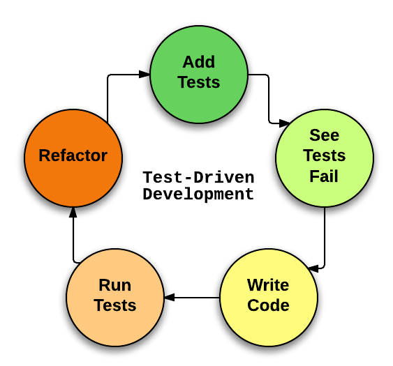
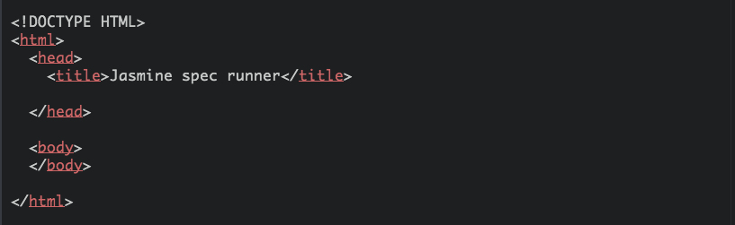
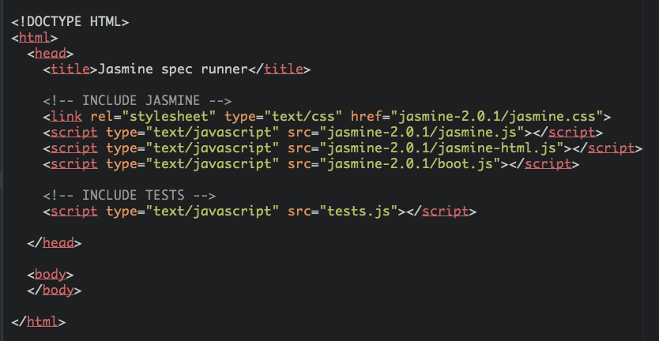
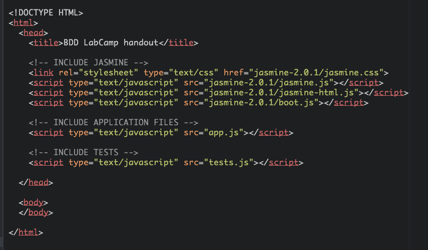
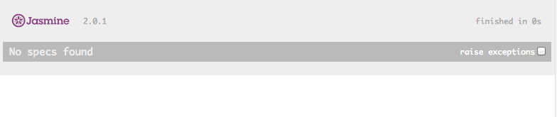

Getting started with
Jasmine
London, 10 September 2014
by
Jelizaveta Potapova
Aleksandr Gulbickij
We are
Web Developers @ Open Reply UK
Agenda for today
- TDD/BDD concept
- Jasmine Basics
- ~5 min break
- Exercise/competition part 1 (~30 min)
- ~5 min break
- Exercise/competition part 2 (~30 min)
- Wrap-up, Questions, Discussion
TDD / BDD concept
A no-TDD workflow
A 'well-tested' product release

What is a test?
Piece of code that is checking
if actual behaviour is what is expected
Sample pseudo code
getVat( '£20', '20%' ) mustEqual '£4'
TDD Workflow
Refactoring
is safe because you have tests

What is BDD ?
Example with VAT -
actual code comparison between TDD and BDD [FIXME]
Jasmine Basics
Download handout
*Please follow
Jasmine framework
can be used
- in browser
- in terminal
Get started
Include Framework
Include JavaScript application code
See what you get
Sample Task [FIXME]
- Let’s write some tests
- Create test suit
- Watch tests fail
- App file - write “dirty” implementation
- Watch test pass
- Refactor
Useful Jasmine operations [FIXME]
5 minutes
break
the
competition
Write
GOOD
tests
Katas: FIXME
- Greet Me
- Trolls
- Boiled Eggs
- Return the missing element
- Who likes it?